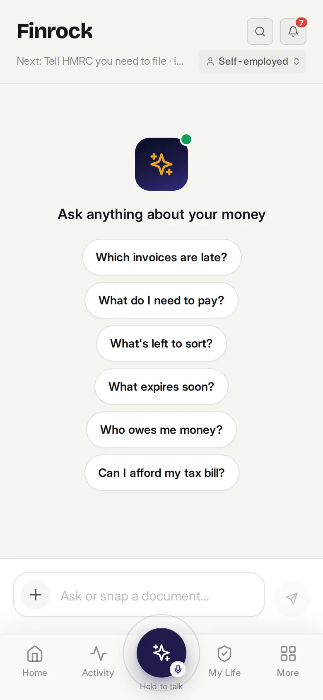

Help centre
How can
we help?
Everything people ask, by topic — and a person on the other end when a guide isn’t enough.
Getting started
Is Finrock free to try?
Every plan is free for 7 days with no card. After the trial an unpaid account can read its books but not add or change anything.
Which plan do I need?
Not self-employed: My Life. Self-employed or letting with qualifying income under £50,000: Sole trader & Landlord. Over it: the MTD plan. A company: Limited company — it includes your personal plan. The plan finder answers it in two taps.
Does it work on my phone and my laptop?
Both. The phone app is built for the daily habit — snap a receipt, sort a few items, check a renewal. The desktop view is for longer sessions: the full ledger, reports and filing.
What happens if I cancel?
Your account drops to free rather than locking. Records, documents and history stay readable and exportable as CSV. Deleting the account removes the data entirely.
Banks & receipts
How do I connect my bank?
Settings → Accounts → Add account. You authorise read-only access at your own bank in about a minute; transactions arrive within minutes, with up to 12 months of history. On the free tier, import a CSV, OFX or QIF statement instead.
How does receipt capture work?
Point the camera at the receipt — at the till is fine. Finrock reads the supplier, date, amount and VAT, matches it to the bank transaction and stores the image with the entry. HMRC accepts digital copies.
How does sorting work?
Anything needing a decision lands in Sort, one item per screen with the answer suggested. Confirm business or personal, the category, and the VAT treatment if it matters. Rules you set apply automatically next time.
Can Finrock move my money?
No. Access is read-only through regulated Open Banking. Finrock can see; it can never pay, transfer or cancel anything.
Tax & filing
Does Finrock file to HMRC?
Returns are prepared from your books, ready to file. Direct submission switches on when HMRC recognition lands. With the accountant check, a qualified accountant files for you.
What is the MTD threshold?
Self-employment turnover plus gross rent, before expenses: over £50,000 for 2026/27, £30,000 from April 2027, £20,000 from April 2028. Salary, pension and dividends don’t count.
I’m a sole trader and a landlord. Do I pay twice?
No. One taxpayer, one plan. Every trade and every property is included at £14.99 or £24.99.
What does the +£10 accountant check include?
A qualified UK accountant checks your Self Assessment, quarterly updates and VAT return before they go, files them for you, and answers questions in the app. Included as standard on every Limited company plan.
My Life
What does My Life track?
Property, vehicle (MOT, tax, insurance), pension, insurance, health, family dates, identity documents, will, warranties, receipts and documents — with renewal countdowns.
Where are my documents kept?
Encrypted in the UK, in transit and at rest, separately from your ledger. Export everything any time.
Can I share with a partner?
Yes — invite a household member to shared records (bills, property, family dates) while your own money stays private.
Account & security
How do I turn on two-factor?
It’s required on every account. Use an authenticator app, with SMS as fallback. Settings → Security shows active devices you can revoke.
How do I export or delete my data?
Settings → Export gives you the full ledger, life records and documents. Settings → Delete account removes everything, save the minimum we must keep to evidence filings made on your instruction.
How do I invite my accountant?
Settings → Accountant → Invite. They get scoped, read-only, logged access to the books you choose. Withdraw it in one tap.
Still stuck?
A person who knows the tax rules.
Support is staffed by people who use the app and understand UK self-employment — half of them are accountants. Free tier within 24 hours; paid plans same working day.
